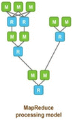
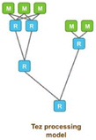

Overview
- A YARN-based data processing application framework which allows for a complex directed-acyclic-graph of tasks for processing data.
- It is considered as a more flexible and powerful successor of the mapreduce framework.
{kind=link}
Features
- Backward compatibility to Mapreduce framework
- Improves the MapReduce paradigm dramatically
- Ability to scale to petabytes of data
- Optimal resource management
- Plan re-configuration at run-time
- Dynamic physical data flow decisions
- Tez is client side application and it is very simple and easy to try it out. No deployments needed.
Comparison with MapReduce
| Types of queries | MapReduce supports batch oriented queries |
Apache Tez supports interactive queries |
|---|---|---|
| Processing Model | MapReduce always requires a map phasebefore every reduce phases  | A single Map phase and we may have multiple reduce phases.  |
| Responsiveness | Slower due to the access of HDFS after every Map and Reduce phase |
High due to lesser job splitting and HDFS access |
Vendors’ SQL solutions
| Cloudera | Hortonworks | Pivotal | MapR |
|---|---|---|---|
Apache Impala
|
Apache Tez
|
Apache HAWQ
|
Apache Drill
|